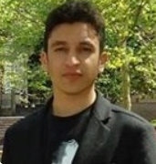
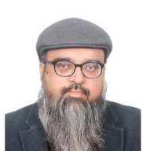
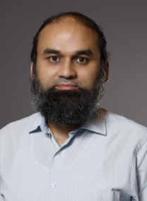

Nonlinear & Robust Control
Advanced nonlinear control design, robustness analysis and control of complex dynamical systems.
Advancing intelligent control, energy systems, sustainable mobility and complex dynamical systems through research and innovation.
Active cell balancing and advanced control for electric vehicle applications.
Intelligent and data-driven approaches for complex dynamical systems.
Nonlinear model predictive control and intelligent energy management.
Research discussions, seminars and technical knowledge exchange.
Active cell balancing and advanced control for electric vehicle applications.
Intelligent and data-driven approaches for complex dynamical systems.
The Control & Energy Systems Research Group (CESRG) at COMSATS University Islamabad focuses on the modeling, analysis and control of complex dynamical systems.
Our research connects advanced control theory with practical engineering challenges in robotics, energy, electro-mechanical systems, battery technologies and sustainable mobility.
Discover our researchWe develop advanced methodologies for modeling, estimation, optimization and control of complex engineering systems.
Advanced nonlinear control design, robustness analysis and control of complex dynamical systems.
Optimization-based control, MPC and nonlinear model predictive control for advanced engineering applications.
Machine learning, data-driven modeling and intelligent control methodologies.
Energy conversion, storage, fuel cells and clean energy technologies.
Observers, Kalman filtering and advanced state estimation for nonlinear systems.
Fault detection, diagnosis and resilient control of engineering systems.
Design and development of an intelligent battery management system integrating active cell balancing, mathematical modeling and nonlinear model predictive control.
Faculty and researchers working across control, energy, mobility and intelligent systems.

Robust nonlinear control, observers, fault detection and multi-agent systems.
View Profile
Energy conversion, energy storage, nonlinear control and EV technologies.
View Profile
Robust controller design, parameter estimation and industrial systems.
View Profile
Learning-based controls, machine learning, sustainable mobility and energy systems.
View Profile
Control-oriented modeling, embedded systems, automotive powertrain and BMS development.
He received the B.Sc. degree in mathematics and computer science from the University of Peshawar in 2003, the M.Sc. and M.Phil. degrees in mathematics from Quaid-i-Azam University, Islamabad, in 2006 and 2008, respectively, and the Ph.D. degree in nonlinear control systems from M. A. Jinnah University, Islamabad, in 2012.
His research interests include robust nonlinear control design, observers design, fault detection in electro-mechanical systems, and multi-agent systems control. He was listed among the Young Productive Scientists of Pakistan in 2017 and 2018.
He received his Ph.D. degree in electrical engineering (control systems) from COMSATS University Islamabad in 2016. From 2015 to 2016, he was a Visiting Scholar at The Ohio State University. From 2020 to 2021, he was a Postdoctoral Researcher at the University of Porto.
His research interests include nonlinear control in energy conversion, energy storage and clean energy technologies. His current research focuses on modeling and control of active cell balancing of lithium-ion batteries for electric vehicles.
He received the master's degree in control systems from Imperial College London in 1994 and the Ph.D. degree in control engineering from Leicester University in 1998.
He is the Founding Head of the Controls and Signal Processing Research Group at CUI and is also a Professor with King Fahd University of Petroleum & Minerals. His research focuses on higher-order sliding mode control, parameter estimation and industrial systems.
He received his Ph.D. degree in Control Systems from Mohammad Ali Jinnah University in 2011. He directs the Mobility Systems Lab in the Department of Mechanical and Aerospace Engineering at The Ohio State University.
His research focuses on learning-based controls, machine learning, energy-efficient and resilient energy systems, sustainable mobility, smart powertrains, safety and security, and connected and autonomous vehicles.
Dr. Ahmad Yar received his Ph.D. in Control Systems in 2017 and specializes in control oriented system modeling, embedded systems design and development, and automotive power-train control.
His research interests focus on real-time control and embedded implementation for vehicular systems, energy and power electronics applications. He is contributing to a PSF-funded project on intelligent Battery Management Systems for electric vehicle applications.
Selected publications demonstrating CESRG's work in active cell balancing, nonlinear control, predictive control and advanced system modeling.
S.B. Javed, A.A. Uppal, M.R. Azam, Q. Ahmed
IEEE Transactions on Transportation and ElectrificationA.A. Uppal, S.B. Javed, Q. Ahmed
IEEE Control Systems LettersA. Ahmed, A.A. Uppal, S.B. Javed
Journal of Process ControlCESRG's research spans nonlinear and robust control, model predictive control, energy storage, active cell balancing, intelligent mobility, state estimation and advanced engineering systems. Additional publications, conference contributions and research outputs will be presented here as the research portfolio continues to grow.
Click the arrow on any event to view its workshop or seminar photographs.
Dr. Qudrat Khan
Mr. Muhammad Azmat Ullah
Dr. Ali Arshad Uppal
Dr. Aamer Iqbal Bhatti
Explore research opportunities in control, energy, mobility and intelligent systems.
Control & Energy Systems Research Group